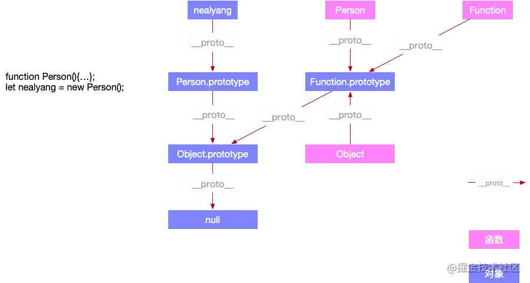
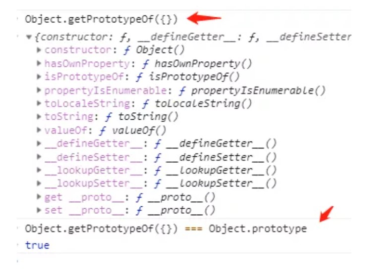
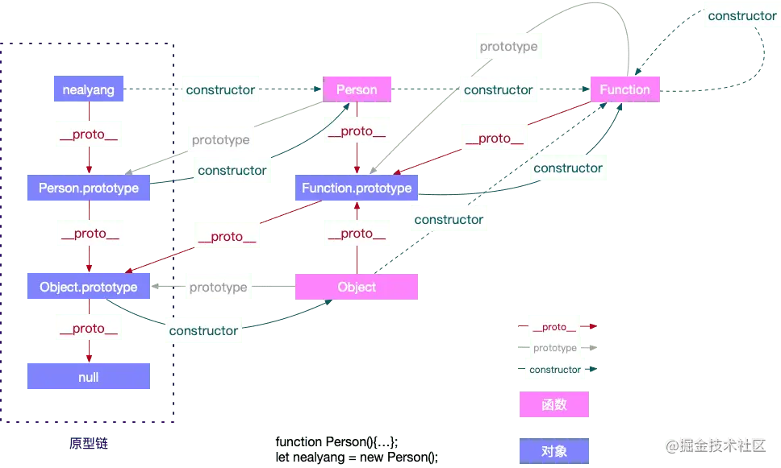

Prototype
函数对象和普通对象
在js中，创建对象有好几种方式，比如对象字面量，或者是直接通过构造函数new一个对象出来，虽然都是对象，却存在着差异性，js中，我们将对象分为函数对象和普通对象。函数对象就是用函数来模拟类的实现
1 | function func1(){} |
- 上述代码中，obj1,obj2,obj3,obj4都是普通对象
- func1，func2，func3都是Function的实例，也就是函数对象
- 可以看出所有Function的实例都是函数对象其他都为普通对象包括Function实例的实例
- Function和new Function的关系为
Function.__proto__=== Function.prototype__proto__和constructor是对象独有的，prototype属性是函数独有的，但是在js中函数也是对象，所以函数也拥有__proto__和constructor属性

proto
es规范里描述prototype是一个隐式引用，但是之前的一些浏览器已经私自实现了__proto__这个属性，使得可以通过obj.__proto__这个显示的属性访问访问到被定义为隐式属性的prototype
- __proto__属性既不能被for…in遍历出来，也不能被Object.keys(obj)查找出来
- 访问对象的obj.proto,默认走的是object.prototype对象上__proto__属性的get/set方法
- __proto__是函数指向对象
原型链
__proto__是对象所独有的，并且__proto__是一个对象指向父类对象，它的作用是当你在访问一个对象属性的时候，如果对象内部没有这个属性，那他就在他的__proto__属性所指的对象（父类对象）上查找，如果父类对象依旧不存在这个属性，那他就在他父类的__proto__所指的对象上查找，以此类推，直到找到null，这个查找的过程也构成了原型链
prototype
在规范里，prototype被定义为给其他对象提供共享属性的对象
- prototype自己也是对象，只是被用以承担某个职能
- 所有对象都可以作为另一个对象的prototype使用
- prototype是函数独有的，它的作用是可以给特定类型的所有实例提供共享的属性和方法，任何函数在创建的时候，都会给该函数添加prototype属性

constructor
constructor属性也是对象所独有的，它是一个对象指向一个函数，这个函数就是该对象的构造函数
- 每个对象都有对应本身或者继承而来的构造函数
- 只有prototype对象有constructor这个属性
- 在每个函数创建的时候js会同时创建一个prototype对象，且
该对象创建的函数.__proto__ === 该函数.prototype，该函数.prototype.constructor === 该函数 - 所以通过函数创建的对象即使已经没有constructor属性，也能通过__proto__找到对应的constructor
上图虚线表示继承来的constructor
typeof && instanceof
typeof
typeof一般被用来判断一个变量的类型
- 我们可以使用typeof来判断number、undefined、symbol、string、function、boolean、object 这七种数据类型，
- 但是判断Object的时候并不能明确的告诉你object属于哪一种object
1
2
3let s = new String('abc');
typeof s === 'object'//true
typeof null;//'object'原理
js在底层存储变量的时候会在变量的机器码的低位1-3位存储其类型信息 - 1：整数
- 110：布尔
- 100：字符串
- 010：浮点数
- 000：对象
对于undefined和null、，这两个值的信息存储是特殊的 - null：所有机器码均为0
- undefined：用 −2^30 整数来表示
在使用typeof来判断变量类型的时候，最好用typeof来判断基本数据类型，避免对null的判断
instanceof
instanceof运算符用来检测constructor.prototype是否存在于object的原型链上，与typeof方法不同的是，instanceof方法要求开发者明确地确认对象为某特定类型
- 如下，是instanceof的基本用法，它可以判断一个实例是否是其父类型或者祖先类型的实例
1
2
3
4
5
6
7
8
9
10
11
12
13
14
15
16
17
18
19
20
21
22
23
24
25
26// 定义构造函数
function C(){}
function D(){}
var o = new C();
o instanceof C; // true，因为 Object.getPrototypeOf(o) === C.prototype
o instanceof D; // false，因为 D.prototype 不在 o 的原型链上
o instanceof Object; // true，因为 Object.prototype.isPrototypeOf(o) 返回 true
C.prototype instanceof Object // true，同上
C.prototype = {};
var o2 = new C();
o2 instanceof C; // true
o instanceof C; // false，C.prototype 指向了一个空对象,这个空对象不在 o 的原型链上.
D.prototype = new C(); // 继承
var o3 = new D();
o3 instanceof D; // true
o3 instanceof C; // true 因为 C.prototype 现在在 o3 的原型链上
类的prototype属性和__proto__属性
大多数浏览器中，每一个对象都有__proto__属性，指向对应的构造函数的prototype属性。Class作为构造函数的语法糖，同时拥有prototype属性和__proto__属性，因此同时存在两条继承链
- 子类的__proto__属性，表示构造函数的继承，总是指向父类
- 子类prototype属性的__proto__属性，表示方法的继承，总是指向父类的prototype属性上面代码中，子类的__proto__属性指向父类，子类的prototype属性的__proto__属性指向父类的prototype属性
1
2
3
4
5
6Class Father{
}
Class Child extends Father{
}
Child.__proto__ === Father;//true
Child.prototype.__proto__ === Father.prototype;//true
这样是因为类的继承是按照下面的模式实现的1
2
3
4
5
6
7
8
9
10Class Father{
}
Class Child{
}
//Child的实例继承Father的实例
Object.setPrototypeOf(Child.prototype,Father.prototype);
//Child继承Father的静态属性
Object.setPrototype(Child,Father)
const c = new Child();
Object.setPrototypeOf方法的实现如下：
Object.setPrototypeOf = function(obj,proto){
obj.proto = proto;
return obj;
}
因此就得到了上面的结果
1 | Object.setPrototypeOf(Child.prototype,Father.prototype); |
这两条继承链可以这样理解：作为一个对象，子类(Child)的原型(__proto__属性)是父类(Father)；作为一个构造函数，子类(Child)的原型对象(prototype属性)是父类原型对象(prototype属性)的实例
1 | Child.prototype = Object.create(Father.prototype); |
extends关键字后面可以跟很多种类型的值
1 | class Child extends Father{ |
上面代码中的Father只要有一个有prototype属性的函数就能被Child继承，由于函数都有prototype属性(处理Function.prototype函数)，因此Father可以是任何函数
下面讨论两种情况，第一种，子类继承Object类
1 | class Child extends Object{ |
这种情况下，Child其实就是构造函数Object的复制，Child的实例就是Object的实例
第二种情况，不存在任何继承
1 | class C{ |
这种情况下，C作为一个基类(即不存在任何继承)就是一个普通函数，所以直接继承Function.prototype，但是C调用后返回一个空对象(即Object实例)，所以C.prototype.__proto__指向构造函数(Object)的prototype属性
实例的__proto__属性
子类实例的__proto__属性的__proto__属性，指向父类实例的__proto__属性，也就是说，子类原型的原型，是父类的原型
1 | var p1 = new Father(2,3); |
- 上面代码中Child继承了Father，导致前者原型的原型是后者的原型
- 通过子类实例的__proto__.__proto__属性可以修改父类实例的行为
1
2
3
4p2.__proto__.__proto__.personName = function(){
console.log('one')
}
p1.personName()//'one' - 上面代码在Child的实例p2上向Father类添加方法，结果影响到了Father类的实例p1
继承
ES5继承实现方式
es5规范中新增了Object.create()方法，该方法会传入一个对象，返回一个对象，返回的对象的原型指向传入的对象。比如执行代码var output = Object.create(input)，相当于执行代码output.proto = input,output的原型是input
Object.keys()方法用以获取对象自身的属性数组，我们可以用该方法简化继承父类静态属性和方法的过程1
2
3
4
5
6
7
8function extendsClass(child,Father){
Child.prototype = Object.create(Father.prototype);
Child.prototype.constructor = child;
Object.keys(Father).forEach(function(key){
Child[key] = Father[key]
})
}
ES6继承(class继承)
Class可以通过extends关键字实现继承，这比ES5通过原型链实现继承要清晰和方便的多
1 | class Father{ |
上面代码定义了一个Father类，该类通过extends关键字继承了Child类的所有属性和方法，由于内部没有添加代码，所有这两个类完全一样，等于复制了一个Child类
1 | class Child extends Father{ |
上面代码中，constructor方法和toString方法之中都出现了super’关键字，它在这里表示父级的构造函数，用来新建父级的this对象
子类必须在constructor方法中调用super方法，否则新建实例时会报错。这是因为子类自己的this对象必须先通过父类的构造函数完成塑造，得到与父类同样的实例和方法后在对其进行加工，加上子类自己的实例属性和方法，如果不调研super方法，子类就得不到this对象
1 | class Father{} |
- ES5的继承，实质是先创造子类的实例对象this，然后再将父类的方法添加到this上面(Parent.apply(this))。
- ES6的继承机制完全不同，实质是先将父类实例对象的属性和方法加到this上面，然后再用子类的构造函数修改this
- 如果子类没有定义constructor方法，这个方法会被默认添加
- 在子类的构造函数中，只有调用super之后才可用this关键字。这是因为子类实例的构建基于父类实例，只有super方法才能调用父类实例，下列代码中子类的constructor方法没有调用super直线使用this关键字会报错，放在super方法后就是对的
1
2
3
4
5
6
7
8
9
10
11
12
13
14
15
16
17
18class Father{
constructor(x,y){
this.x = x;
this.y = y;
}
class Child extends Father{
constructor(x,y,age){
this.age = age;//ReferenceError
super(x,y);
this.age = age; //true
}
}
}
let ch = new Child(25,8,18);
ch instanceof Child;//true
ch instanceof Father;//true
//实例对象ch同时是Child和Father两个类的实例，与es5的行为完全一致父类的静态方法也会被子类继承
1
2
3
4
5
6
7
8class Father{
static hello(){
console.log('hello world')
}
}
class Child extends Father{
}
Child.hello()//hello world